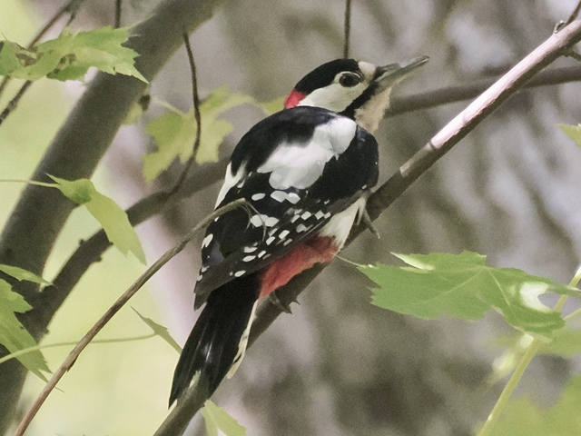
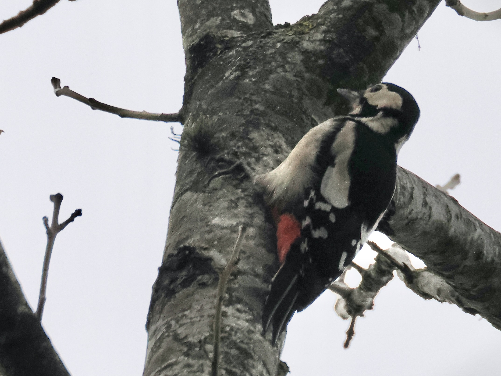
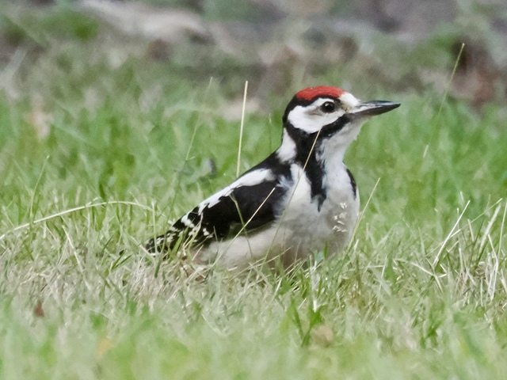

Great Spotted Woodpecker
Dendrocopos major
Order: Piciformes
Family: Picidae

Great, spotted a woodpecker. Medium-sized woodpecker with a black cap, back, wings and tail, white sholder patches, red vent, and white spots on the wings. Has a Y-shaped black mark on the neck and face. Male has a red nape. Woodpeckers have zygodactyl feet with two toes facing forward and two facing backward, and stiff and pointed tail feathers to provide support when climbing.

Female lacks the red nape. Climbs trees and hacks wood to find insects. Drums to communicate.

Juvenile has a red cap; note differences from other red-capped woodpeckers like Middle Spotted.